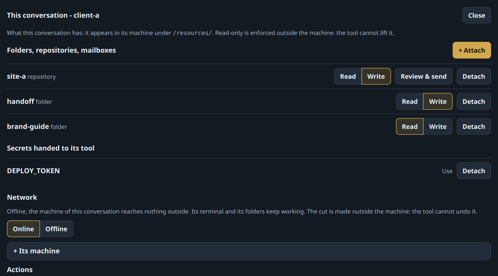

How your keys and data are kept safe
Each agent works in a machine of its own. Your keys stay on your server.
Keys first
A key you give one agentIn that agent's machine, in memory, only while it runs. Detach it: its file is removed at once. A running tool keeps its old value until restarted, and a copy it made stays.in its machine
The key that pushes codeSealed on your server. Used when you press Send.never in a machine
Mail and account passwordsSealed on your server. The connector acts for the agent.never in a machine
- One VM per agent, or its own user in a shared VM.
- In separate VMs, agents never reach each other. In a shared VM they can.
- Read-only is enforced outside the machine. Offline too, except in a shared VM.
Nothing leaves with your keys without you
Commits wait for your review, unless you turn on automatic sending. The agent never has the key.

Limits
- Online, an agent can reach any address. Per-agent allow-lists: Roadmap.
- Inside its machine, an agent can do anything with what you gave it.
- A trapped mail can push an online agent to send what it read to another address.
- Removing an access does not erase what was already read: it stays in the conversation and with the AI provider.
Questions
Can one agent read another's key?
No. Tried on a real install (Ubuntu 24.04): the second agent found no folder, no key, no network path.
Can it answer for me at night?
Off by default. All configured models must agree, under your charter. One doubt, and you are asked.
Does anything of yours run outside my house?
Clavarium runs on your server. But the AI provider you choose receives what its agent reads and writes, and a relay, if you use one, carries your connection. Phone alerts go through the browser's push service, encrypted for that device.